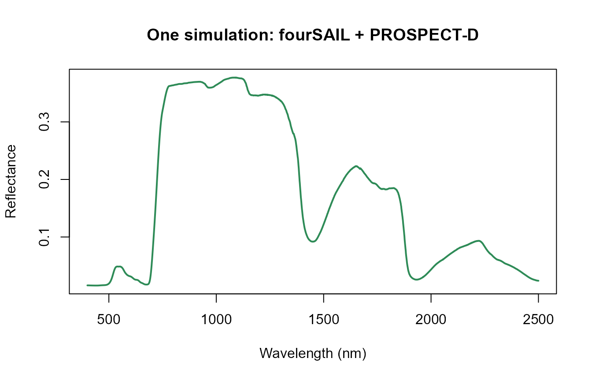

01. Getting Started with ToolsRTM
t01-getting-started.Rmd
library(ToolsRTM)The goal of this page is the smallest possible example: produce one vegetation reflectance spectrum with the minimum configuration required. Everything else in this tutorial series (LUT inversion, parallel simulation, machine learning) builds on the four-step chain below.
Vegetation parameters
|
v
PROSPECT
|
v
Leaf reflectance / transmittance
|
v
fourSAIL
|
v
Canopy reflectance1. Leaf traits and canopy structure: one row of parameters
A simulation always starts from one row of trait values – a
data.frame with one column per parameter the leaf and
canopy model need. Here, PROSPECT-D needs the leaf
biochemistry (N, Cab, Car,
Anth, Cbrown, EWT,
LMA); fourSAIL needs the canopy structure
(LAI,
LIDFa/LIDFb/TypeLidf,
hspot) and the sun-view geometry
(tts/tto/psi):
row <- data.frame(
# Canopy structure and geometry (fourSAIL)
LAI = 3, hspot = 0.01, LIDFa = -0.35, LIDFb = -0.15, TypeLidf = 1,
tts = 30, tto = 0, psi = 0,
# Leaf biochemistry (PROSPECT-D)
N = 1.5, Cab = 40, Car = 8, Anth = 2, Cbrown = 0, EWT = 0.009, LMA = 0.009,
alpha = 40
)A soil spectrum is also required – foursail() mixes leaf
optics with whatever shows through the canopy gaps. A 50/50 blend of the
package’s own bundled dry/wet reference soil spectra is a reasonable,
physically-motivated default (Tutorial 05 covers building LUTs properly;
Tutorial 10’s sibling article on soil/MARMIT integration covers a
moisture-realistic alternative):
rsoil <- 0.5 * dataSpec_PDB[, 11] + 0.5 * dataSpec_PDB[, 12] # dry/wet soil blend2. PROSPECT: leaf reflectance and transmittance
foursail() runs PROSPECT internally (via its
LeafModel argument) and returns the canopy-level outputs
directly – there’s no need to call the leaf model on its own for this
minimal example. LeafModel = "PROSPECT-D" selects the leaf
model; Tutorial 02 shows every leaf model available and how to call
PROSPECT on its own when only leaf-level output is needed.
3. fourSAIL: canopy reflectance
sail <- foursail(inputLUT = row, rsoil = rsoil, LeafModel = "PROSPECT-D")
names(sail)
#> [1] "rdot" "rsot" "rddt" "rsdt"sail$rdot (hemispherical-directional reflectance factor)
and sail$rsot (bi-directional reflectance factor) are
fourSAIL’s two raw outputs. Compute_BRF() blends them using
the sun/view geometry into the single top-of-canopy (TOC) reflectance
spectrum a sensor actually observes:
reflectance <- Compute_BRF(rdot = sail$rdot, rsot = sail$rsot,
tts = row$tts, data.light = dataSpec_PDB)
length(reflectance) # one value per nm, 400-2500nm
#> [1] 21014. Plot the result
plot(dataSpec_PDB[, 1], reflectance, type = "l", col = "#2E8B57", lwd = 2,
xlab = "Wavelength (nm)", ylab = "Reflectance",
main = "One simulation: fourSAIL + PROSPECT-D")
The familiar vegetation signature is already visible: low reflectance in the visible (400-700nm, chlorophyll absorption), a sharp rise at the red edge (~700-750nm), a high NIR plateau (leaf/canopy structural scattering), and two water-absorption dips in the SWIR (~1450nm, ~1950nm).
What’s next
This page deliberately stopped at one simulation. The rest of this series builds outward from here:
- Tutorial 02 – every leaf model (PROSPECT-D/-PRO, Fluspect, Liberty) and every canopy model (fourSAIL, fourSAIL2, INFORM), and how trait changes propagate from leaf to canopy.
- Tutorial 03 – SPART, when a single TOC simulation like this one isn’t enough and you need the full soil-plant-atmosphere chain to top-of-atmosphere.
- Tutorial 05 – building a LUT (many rows of trait values at once) instead of one hand-written row.